By Aaron Cheney & Peter Brinson
0. Introduction
A. Outcome
This tutorial’s outcome: When the player character steps on a floor plate, a particular door slides open. The door closes when the player steps off the plate.
The essential lesson is to learn how the door is “listening” for the pressure plate to call it.
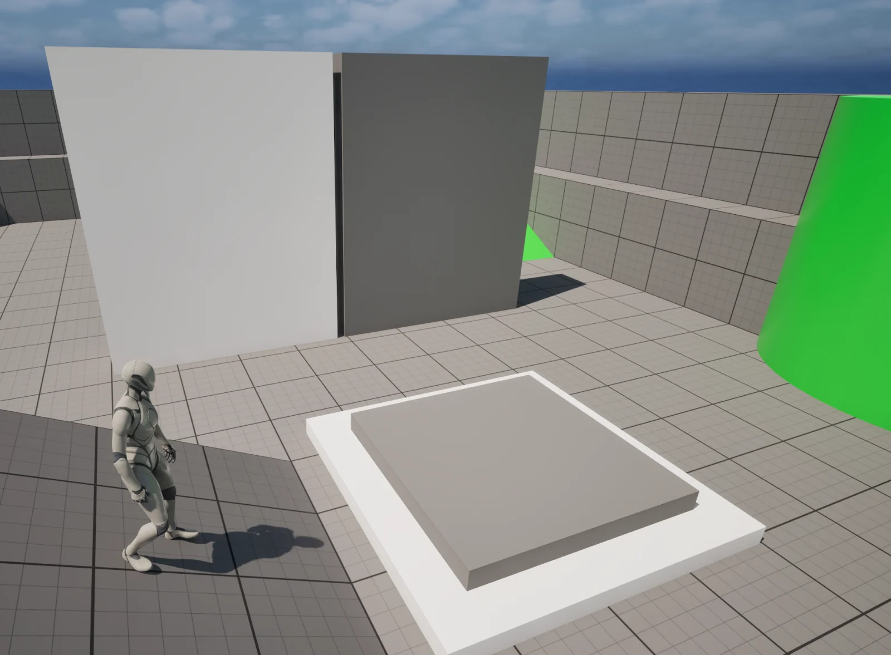
B. Video Version of Tutorial
This tutorial page and this video provide the same lesson in slightly different ways, encouraging you to repeat steps (a little differently) until you understand the principles. The outcome is demonstrated at (00:24 - 01:31).
C. Learning Objectives
Develop working knowledge of blueprint fundamentals:
- events
- components
- reference variables
- parameters
- control flow
- data flow
- casting
- timeline (animate location with lerp)
- collision events
- dispatchers
1. A New Third Person Project
A. Choose a Template
Choose New Project
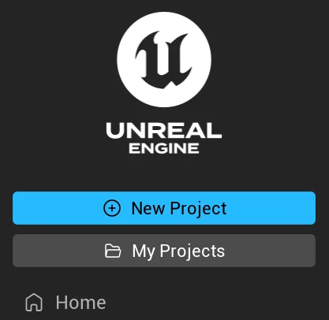
Choose the third person template.
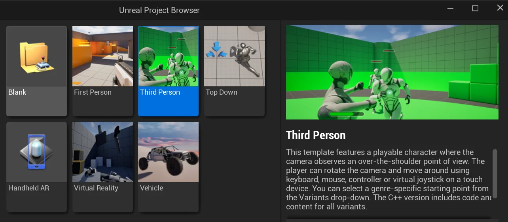
B. Add Platforming Variant
Don’t miss this step: Add the Platforming “Variant”. This is not critical to the project, but this and the next 2 tutorials use it. You will be instructed to choose particular blueprints by name. Without this step, that process will be foiled.
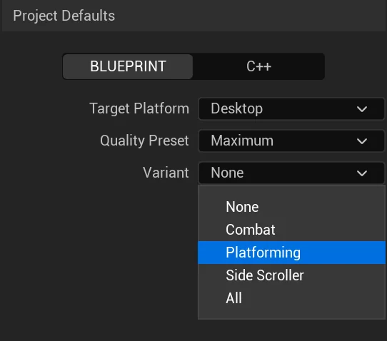
C. Name and Verify
Name your project and click Create.
Once your project is open, click play to ensure you have your third person project working.
D. Change the Player Character
Hold On!
If you are new to Unreal, become familiar with basic viewport navigation UE Editor NavigationFollow this dropdown to change the pawn from
BP_ThirdPersonPlayertoBP_PlatformingCharacter. The pawn is the player character that will be spawned on play.To enlarge any image on this page: Right-click to choose “Open image in new tab”.
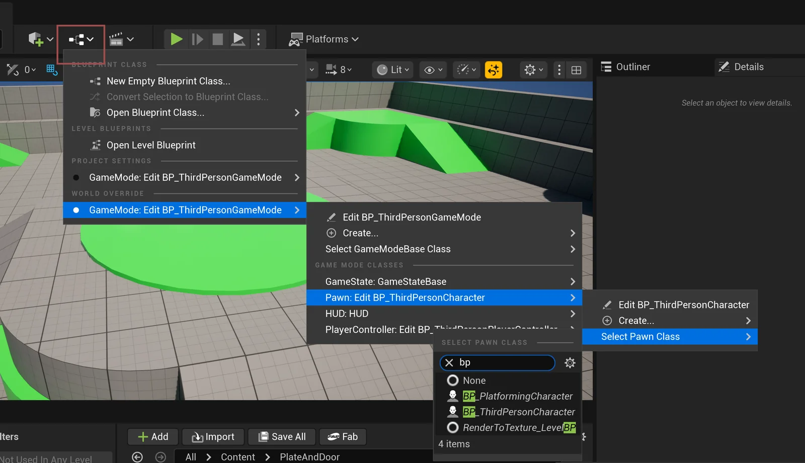
Notice: If you do not find
BP_PlatformingCharacter, that is likely because you did not select the Platforming Variant in Step 1B.Ask your LLM why
In Unreal, why might the tutorial I’m following change the pawn blueprint from a third person character to the platforming character?
2. The Pressure Plate Blueprint
Jump to (01:48): https://vimeo.com/1119249385?fl=pl&fe=cm#t=1m45s
A. Make the Blueprint File
Right-click in the content browser (or content drawer if you prefer) to make a new folder in Content,
PlateAndDoor: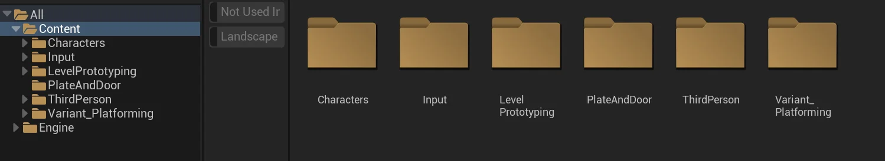
In the folder
PlateAndDoor, right-click in the content browser and choose Blueprint Class. Next, you will chooseActor.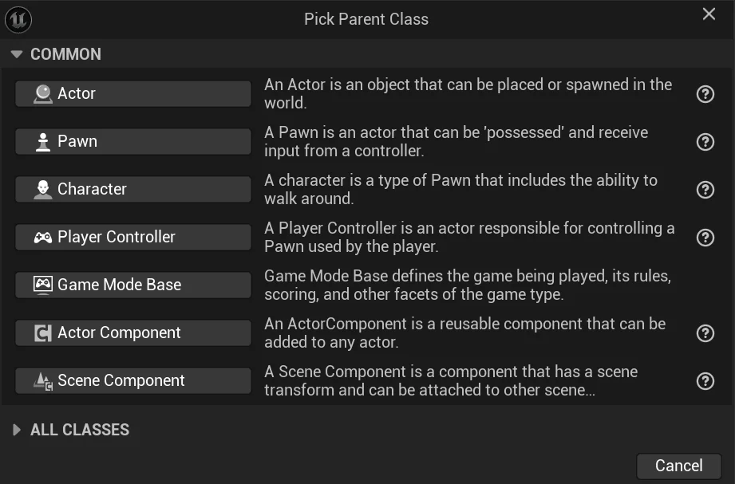
Name the blueprint
BP_PressurePlate. IncludingBP_at the start of blueprints is strongly encouraged. In other situations, for example, you’ll includeM_at the start of materials, and so on.Tip
When you want to rename a file in the Content Browser, after selecting it, click F2.
Ask your LLM what
In Unreal, what is an actor and what is a blueprint?
B. Add and Edit the Geometry
Double click
BP_PressurePlateto get a new window, where you can edit the blueprint. You will use this interface a great deal moving forward.In the Components window, click Add and search for
Cube. Select it under Basic Shapes.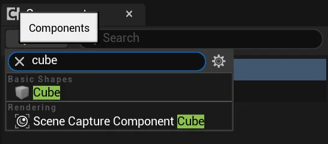
Name the resulting component
BottomPlatform. Use the Transform Gizmo to scale the Z to make it short. Alternatively, you can type in a value in Details > Transform > Scale > Z, as you see on the right.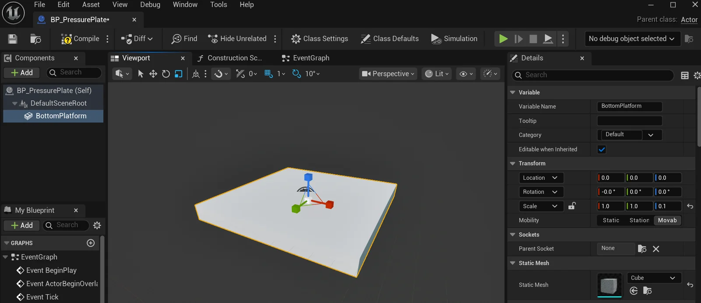
Tip
If the transform gizmo is too sensitive, you can adjust.
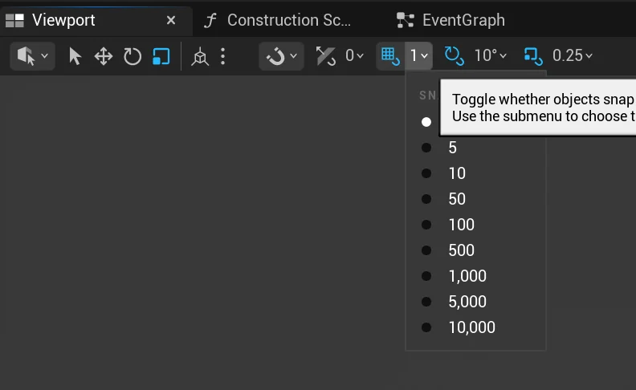
Next, create another
Cubecomponent, name itPressurePlateand configure it as such. Adjust the parent/child hierarchy by dragging in the Components window.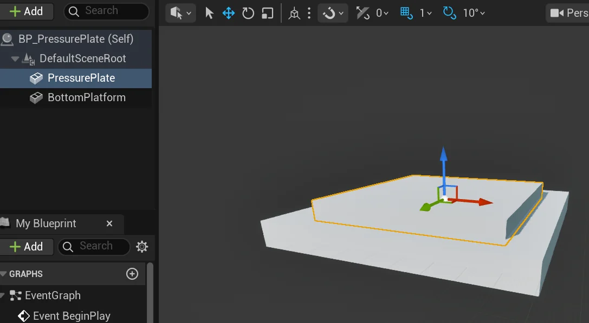
To make the two components visibly distinct, with
PressurePlateselected, findMaterialsin the Details window. Search for “grey” to find a working material already in this project.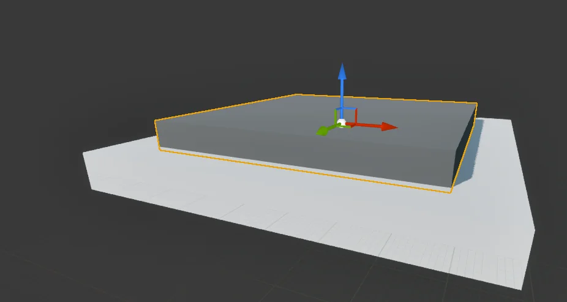
Next, a third component is needed. Its role is to detect when the player steps on the plate. That area (the yellow wireframe) needs to be a little larger than the pressure plate.
To do this, click Add in the component window, choose:
Box Collision(see wiki). Rename itBoxCollider; adjust it to the same child/parent hierarchy as the two pressure plates in Components. Configure it so it is larger thanPressurePlate.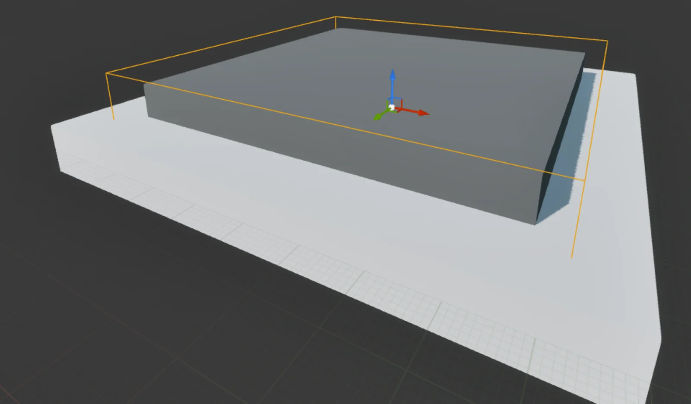
One last adjustment: set
PressurePlateto be at location 0,0,0. (Being inside the blueprint, such locations are relative.) When you set that location,BottomPlatformwill need to be moved downward, and perhapsBoxCollider. This is because Step 2E will animate the pressure plate between, in effect, “Position 0% to Position 100%“. So it is wise to make the default location equal to zero.Return to the main Unreal window, and File > Save Current Level as…
Save the level file in the same folder as our working blueprint,
PlateAndDoor.Tip
The terms ‘scene’, ‘level’, and ‘map’ are interchangeable in Unreal.
Finally, Save All is under File…
C. Add Event: OnComponentBeginOverlap Prints A String
Back to editing
BP_PressurePlate.The previous step - Step 2B, constructing the pressure plate - was taking place in the Viewport. Move to the Event Graph by navigating the tabs you’ll find up high.
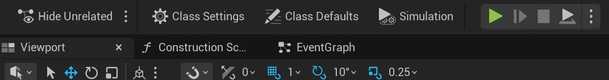
Delete the 3 nodes already in there.
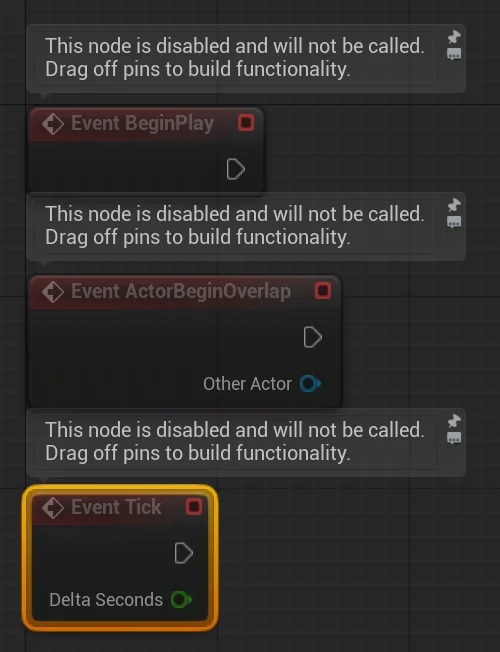
In Components, right-click
BoxCollider> Add Event > OnComponentBeginOverlap. This makes a new node in the Event Graph.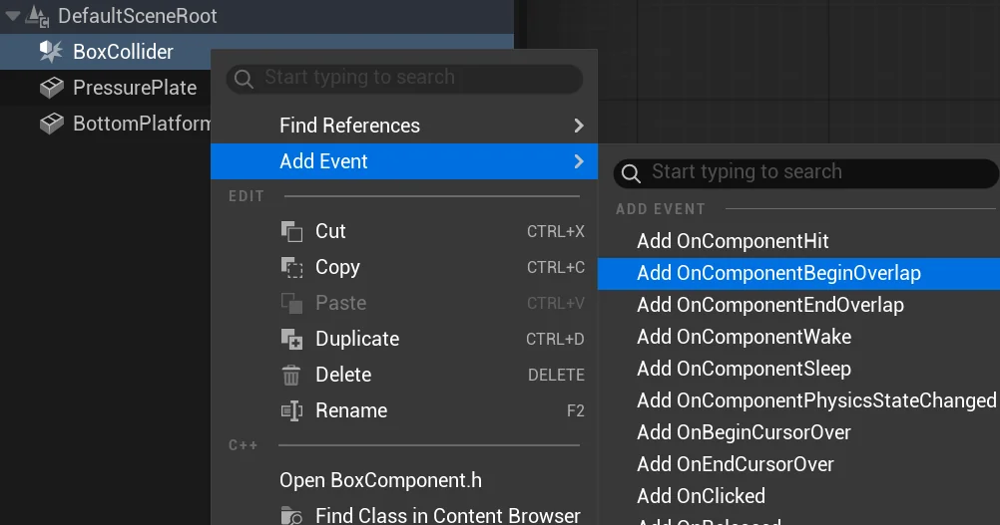
Ask your LLM why
OnComponentBeginOverlapby right clicking a collider component, then choosingAdd Event. I thought the way to add nodes to the event graph was by right-clicking there and searching. Why do it this way this time?In the Unreal tutorial I’m following, I’m working on a blueprint. The tutorial says to add
On the resulting
OnComponentBeginOverlapnode, find its execution pin — the white arrow shape on the top right. Drag out and search for Print String.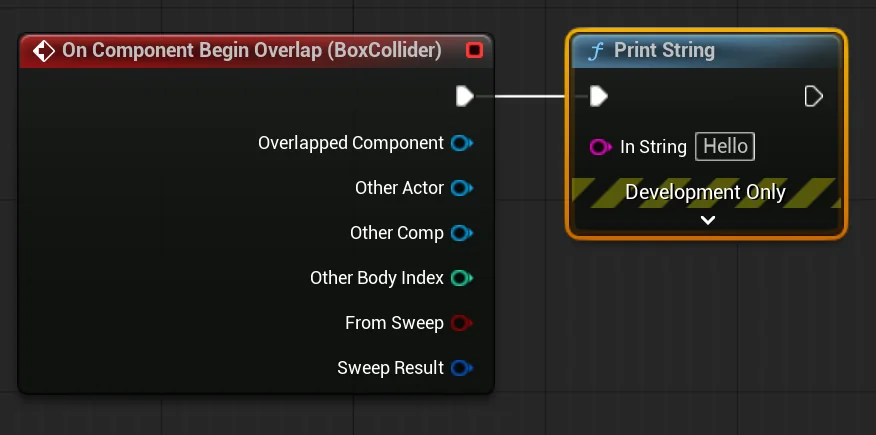
Tip
Remember the terms “node” and “execution pin” (or just “pin”). These are essential moving forward.
In the
Print Stringnode, type in the field (In String)Begin Overlap.Compile
Save All
Return to the level editor. Drag in
BP_PressurePlatefrom the Content Browser. Size and position on the floor.Press play and test. On the top-left of your game window,
Begin Overlapshould appear.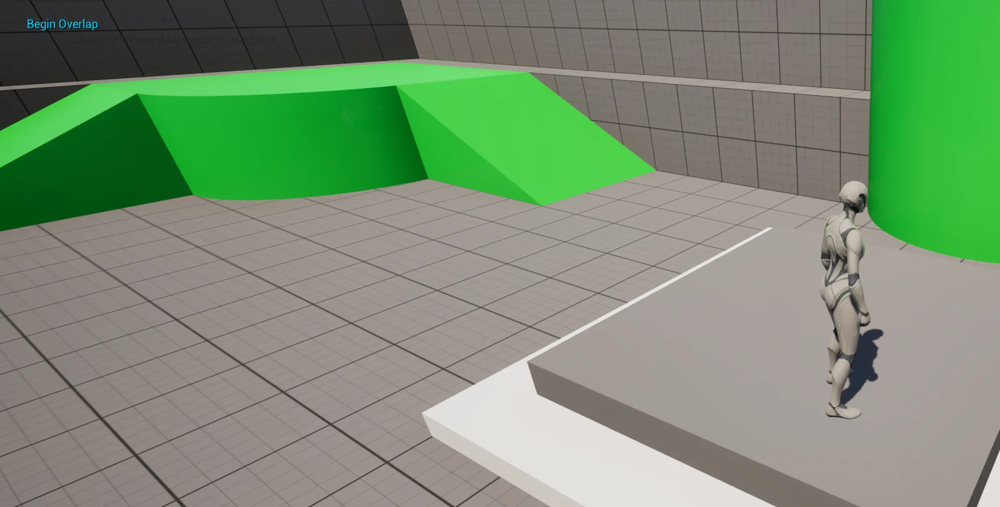
D. Behavior Is Only For Our Player
Back to the Event Graph. Drag off the
OnComponentBeginOverlapexecution pin and search/addCast to BP_PlatformingCharacter(see wiki). This new node is between the other two.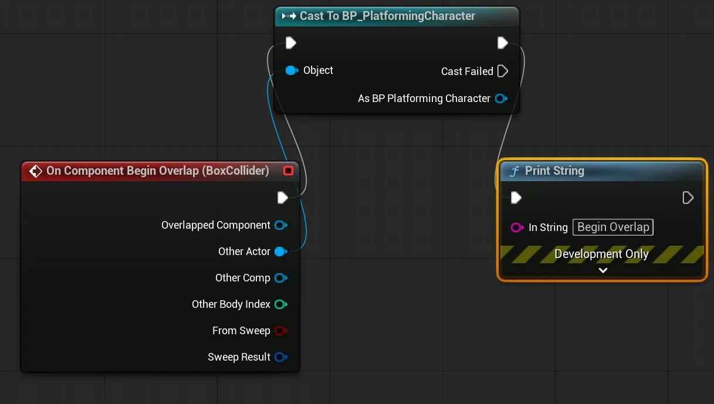
Tip
BP_PlatformingCharacter, it is because you skipped Step 1D, above.If you could not find
Also, connect the parameter
Other Actor to Objectof the middle node, as in the above image. See the blue wire?Play the game again and ensure
Begin Overlapstill appears.What is "cast"?
BP_PlatformingCharacter, the cast works like a question. This cast only lets the blueprint script proceed - from one node to the next - if theObject(parameter) matches.The pressure plate should only be sensitive to the player character. In order to determine if the actor that just touched (the overlap) is indeed
Because this project is currently so simple, this additional functionality is not needed. But it is good practice moving forward.
Save All
E1. Animate the Pressure Plate Downward
Drag off the
Print Stringpin and addAdd Timeline(see wiki). Name that new nodePressurePlateTimeline.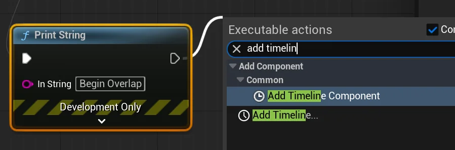
Double click the new node to get a new interface.
Add Float Track. Name that newFloattrackPressurePlateHeight. The plan is to animate the pressure plate’s Z position.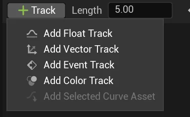
Make
Length0.75, which establishes that it will take 0.75 seconds to animate.Right-click on the graph to add a keyframe at 0 and another at 0.75. Fields will appear allowing you to enter exact values. The keyframe at 0 has a value of 0. At 0.75, enter the value 1. Think of the 0 and 1 functioning as “Position 0% and Position 100%“.
Click the button with arrows pointing up and down to adjust the graph’s view so you see everything.
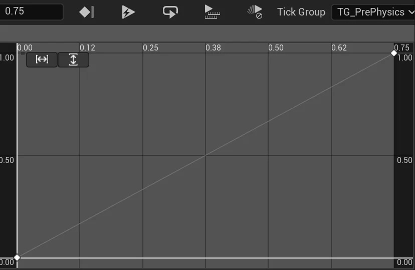
Back to the Event Graph. Drag from the
PressurePlateTimeline’s pin to addPrint Stringto the right of it. See how one of the parameters is being passed in with the green wire that gets cast to a pink one?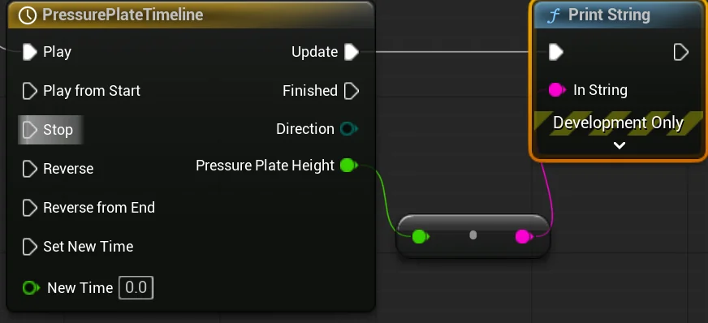
Ask your LLM why
PressurePlateTimelinenode's parameter,Pressure Plate Heightpasses to the nodePrint String'sIn Stringparameter. It created a small node between those two wires when I did so. Why does it change the data type?In the Unreal tutorial I’m following, the
Compile
Play again to see integer values printed.
Add:
Set Relative Location(see wiki). There is more than one to choose from. Choose the one that includes(Pressure Plate).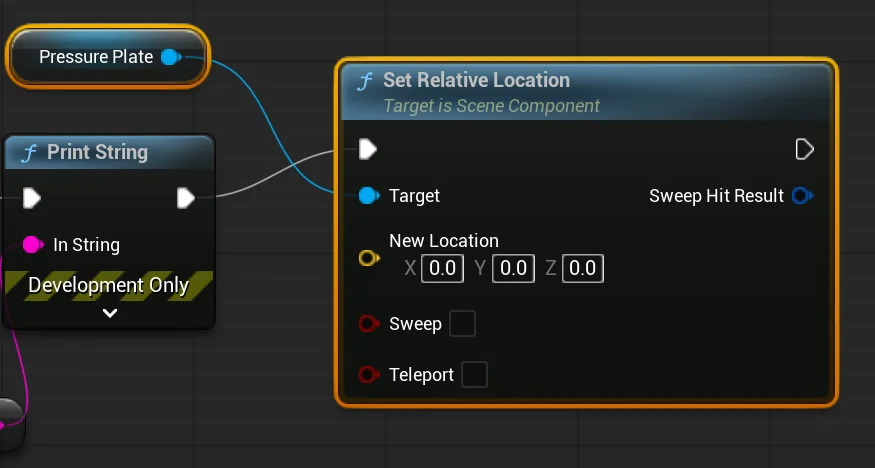
See the node with only
Pressure Plate? When you addedSet Relative Location(see wiki), choosing the one withPressure Plateadded a reference variable node. (Typically, such reference variables need to be set up manually.)Right-click the
Set Relative Locationnode’sNew Locationto “split”. This will split that Vector3 into discrete parameters. Then hookPressure Plate Heightto theNew Location Z. It will be a green wire.Compile Test the game. The pressure plate now changes location, but there is more work to do.
Time to insert a Lerp and configure the values and wires as such.
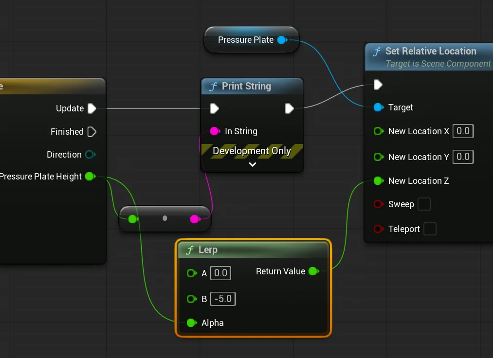
Be ready to tweak the B value in the
Lerpnode.Ask your LLM why
Lerpnode between aTimelinenode and aSet Relative Locationnode'sNew Location Zinput value. Why?In the Unreal tutorial I’m following, it says to insert a
E2. Animate the Pressure Plate Upward
And to make the pressure plate return to its initial location, add two nodes - OnComponentEndOverlap and
Cast to BP_PlatformingCharacter. This closely models what you did in Step E1.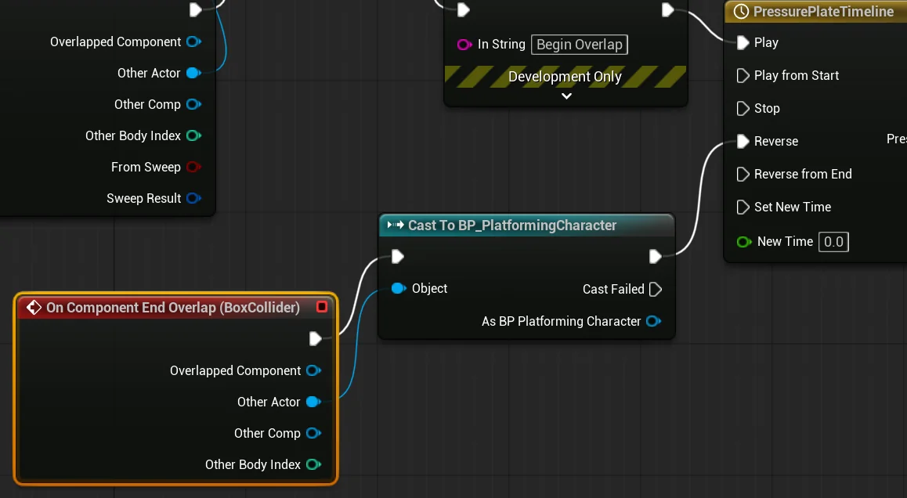
Here is the completed Event Graph for
BP_PressurePlate.To enlarge any image: Right-click to choose “Open image in new tab”.
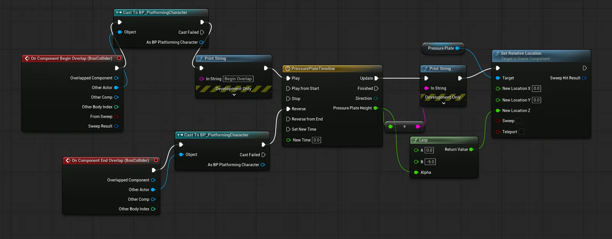
Save All
3. The Door Listens and Opens
Jump to (17:07): https://vimeo.com/1119249385?fl=pl&fe=cm#t=17m7s
A. Create the Door Blueprint and Configure Geometry
Time to make a new blueprint. Name it
BP_Door. Refer back to Steps 2A and 2B for general guidance on making a new blueprint and editing it.Make two cube components. Scale, position, and name them like the image below.
The wall component will not move, and the door component will move. Therefore, make sure the door component is at location 0,0,0 before dragging the blueprint asset (from Content Browser) into the scene.
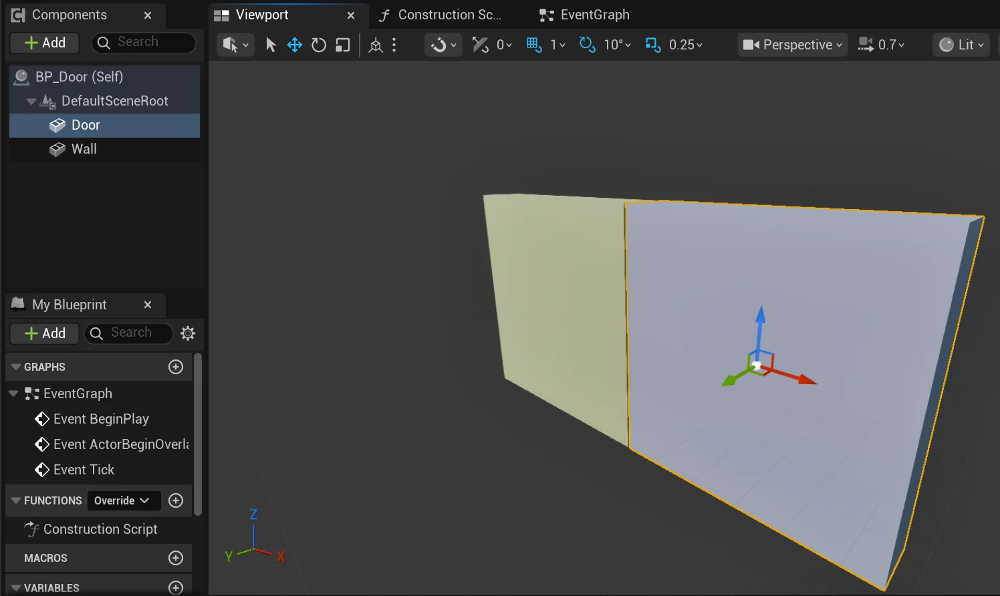
B. Dispatcher for the Pressure Plate
Back to editing the pressure plate blueprint. In the event graph, find EVENT DISPATCHERS on the left, and click its little plus button. Name the dispatcher
OnBeginPressurePlate.Drag it into the Event Graph, choose “call” after letting go. And insert before
PressurePlateTimeline.Ask your LLM why
callupon adding it to the event graph. Why?In the Unreal tutorial I’m following, it says to add a dispatcher, and choose
C. Bind Event in the Door
Back in the door blueprint. The Event Graph. Delete the nodes except keep
Event BeginPlay.Drag off of
Event BeginPlayand search forBind Event to On Begin Pressure Plate. Need to uncheck Context Sensitive right there? This makes the connection to the work in Step 3B, the event dispatcher.Ask your LLM
Bind Event to On Begin Pressure Plate. I needed to check untrueContext Sensativein that interface. Why?In the Unreal tutorial I’m following, it says to add the node
What we are doing here: when the game starts, set the door to be “listening” for the pressure plate to
Call On Begin Pressure Plate.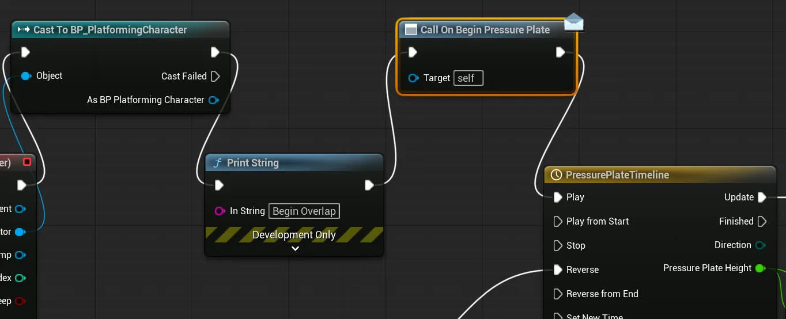
Save All
On the left, click the plus to the right of VARIABLES, name it
MyPressurePlateand give it a type,BP_PressurePlate. You will have to search for that type as it is quite specific compared to say,IntorString.Keep the variable
MyPressurePlateselected. Under Details, click onInstance Editable(see wiki) andExpose on Spawn. This opens up the scope of this variable beyond its blueprint, so that it can be a reference to our other blueprint - pressure plate.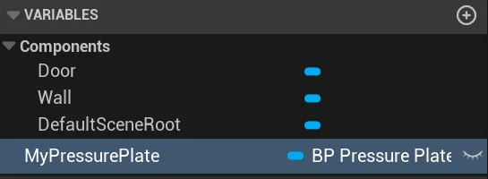
Notice the open eye icon next to the variable, where you created it on the left. When you clickedInstance Editable, you make it a public variable accessible in the level. We will take advantage of that setting soon, the fact that the variable is “exposed”.Now you can drag the variable
MyPressurePlateinto the event graph, choose “Get”, and drag its wire to the parameterTarget- found onBind Event to On Begin Pressure Plate.If you compile, you will get an error. Hold tight.
Right-click in the Event Graph and click
Context Sensitiveback totrue. Search and chooseAdd Custom Event(see wiki).Name it
OnPressurePlatePressed. Connect it toEventofBind Event to On Begin Pressure Plate.Notice it is not the execution pin that draws the red wire.
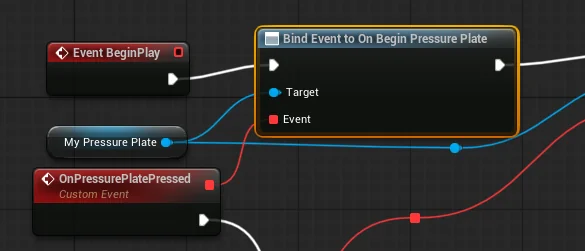
Because you exposed the variable
MyPressurePlateabove, we can give the variable a value in the level.Click on the door in the level. In Details, find the variable,
My Pressure Plate— hey, here is where you can initialize the variable that you just created. Change its value toBP_PressurePlate. Success: the door has a reference to the pressure plate.To make sure things are set, in the door Event Graph, drag off
OnPressurePlatePressed’s pin, add a print statement with “Door (me) got called”. Compile and test to see that string appears when the player character steps on the pressure plate.Save All
Ask your LLM why
In an Unreal tutorial I’m following, why might it ask me to make a blueprint variable Instance Editable?
D. Animate the Door with the Timeline Node
Refer to Steps 2A and 2B to animate the door. And Step 3C for how to call the pressure plate (so it will close). That is, this section - 3D - does not tell you how to animate and call the door, but you can extrapolate based on 2A, 2B, and 3C - with these additional instructions incorporated:
- When you edit the timeline for your door, name the float track
DoorXPosition.- When you are setting the location, the specific node is:
Set Relative Location (Door).- The pressure plate needs the node
Call On End Pressure Plateinserted similarly to how you did forCall On Begin Pressure Platein 4C. Look at the complete graph a bit below for details.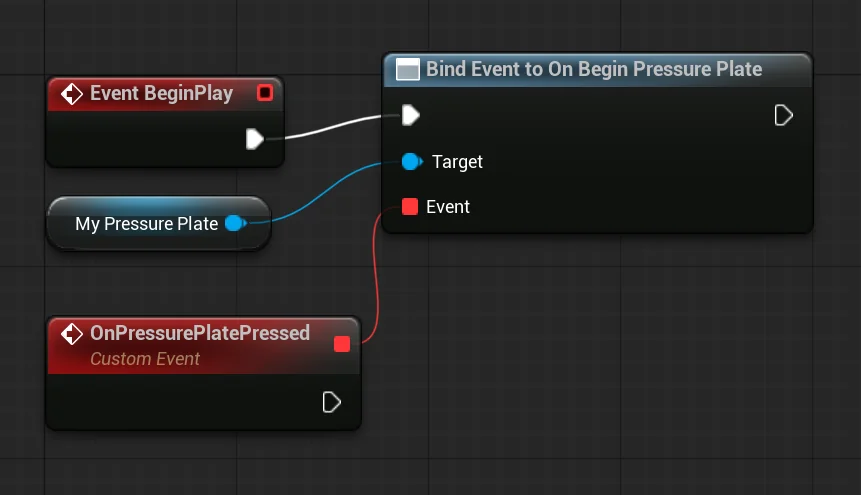
Tip
If you double-click a wire, it will add a dot - a reroute node - which is a way to shape your wires for orderliness.
Below are the two completed event graphs.
To enlarge any image on this page: Right-click to choose “Open image in new tab”.
BP_Door
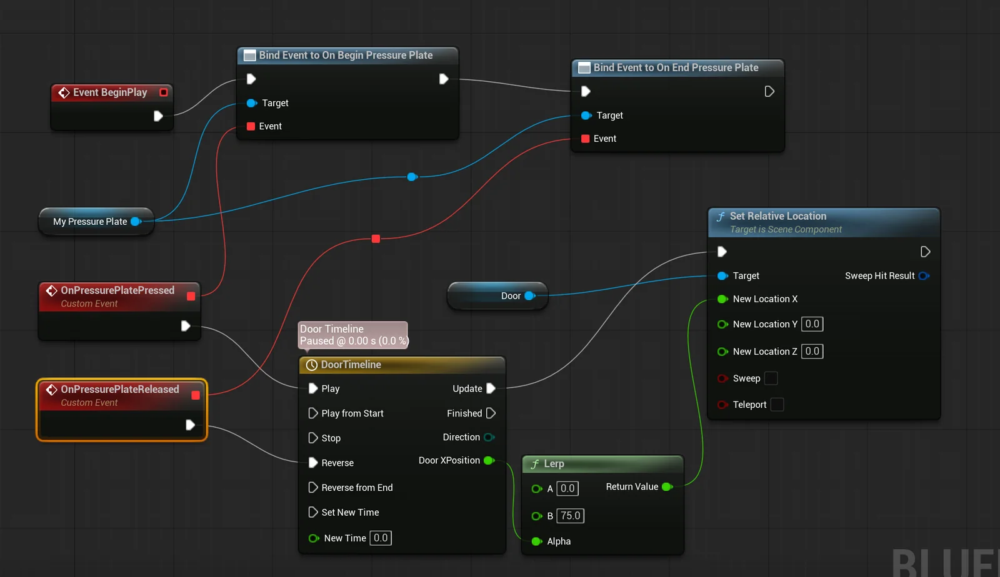
BP_PressurePlate
What you can now build
- A trigger zone that detects when the player enters or exits — and ignores other physics objects
- A door (or any object) that slides open and closed smoothly when the player approaches.
- A pressure plate that broadcasts an event without knowing who’s listening — the door binds to that event at startup, so the plate never needs a reference to the door
- Animated movement along one axis driven by a timeline curve
- The foundational “when the player steps here, something happens over there” pattern that underlies nearly all proximity-based gameplay
Example deviations you are ready for
- The trigger is fired by BP_FirstPersonCharacter or BP_ThirdPersonCharacter
- The object (such as a door) rotates or scales rather than slides
- For example, design a floor trap door
- Ready two (or more) “doors” to react to pressure plate trigger